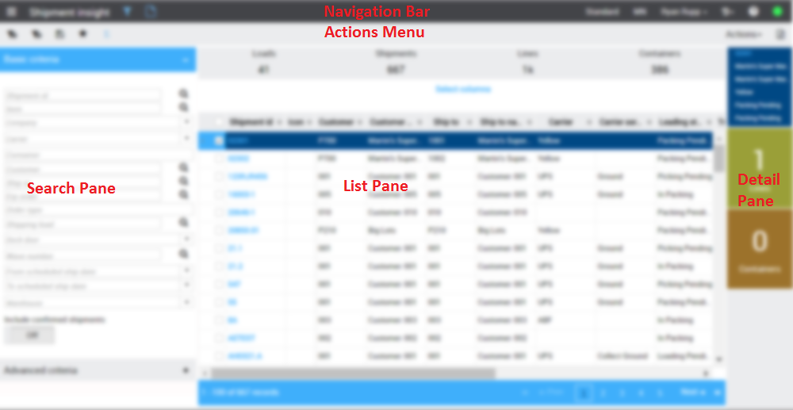
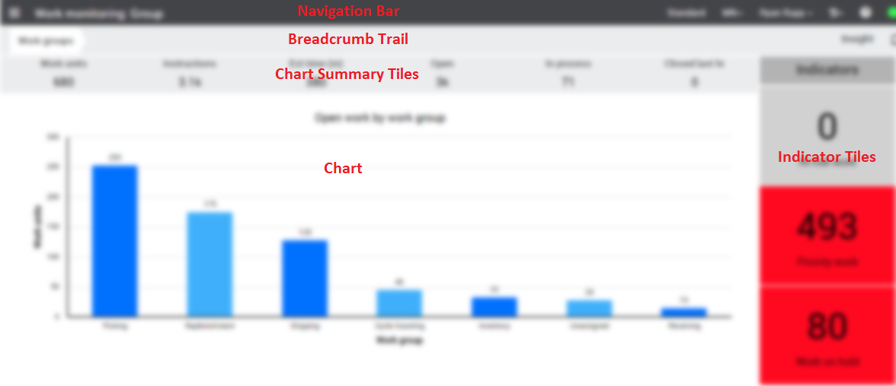
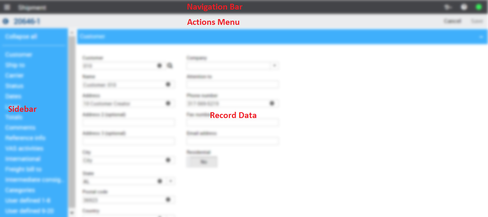
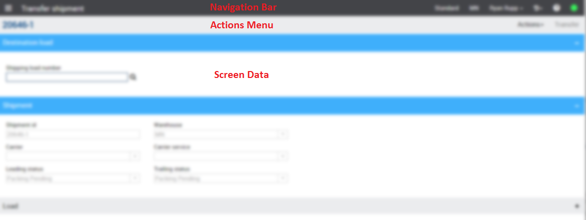
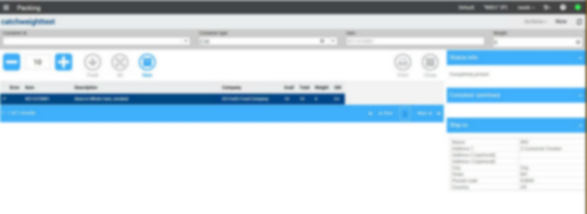

Please reference the Metadata Page Architecture and Complex Page Architecture topics for page architecture, metadata structure, and a glossary of terms.

Manhattan Active SCALE Documentation
Getting Started: Metadata Web Pages
All new SCALE screens are written as web pages that are fully extensible via metadata. This page serves as a general starting point for metadata screen extensibility.
Please reference the Metadata Page Architecture and Complex Page Architecture topics for page architecture, metadata structure, and a glossary of terms.
There are 5 different frameworks (or patterns) available in SCALE currently:





The tooling for the SCALE metadata is still a work in progress. This tool is called Insight Architect. More information on Insight Architect can be found in the How to: Use Insight Architect to Customize a Metadata Page topic.
Use the following topics to learn how to modify an existing metadata page in SCALE.
Use the following topics to learn how to create a new metadata page in SCALE.